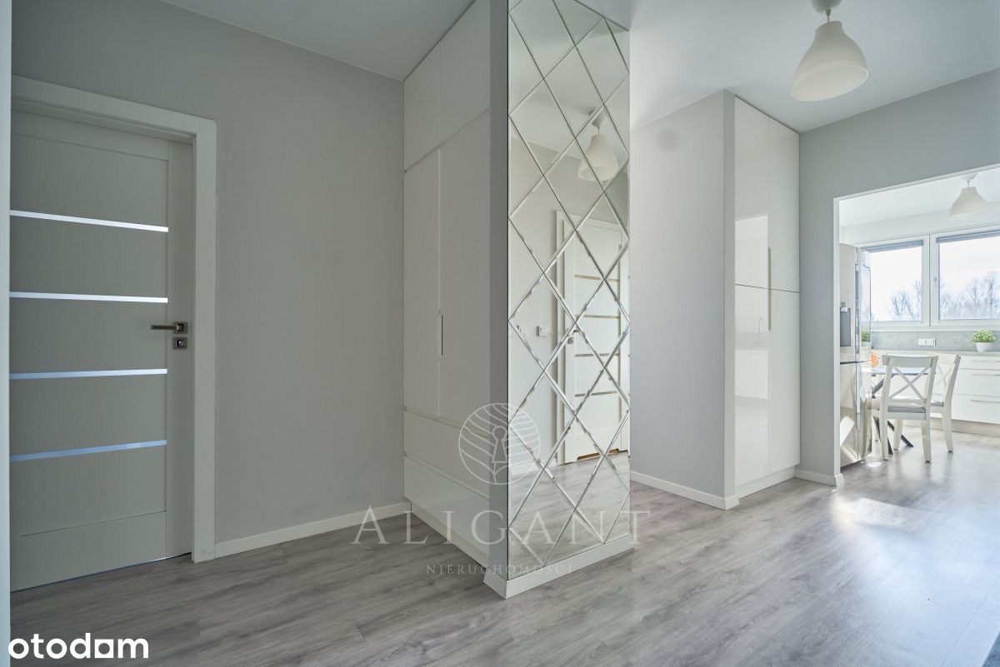
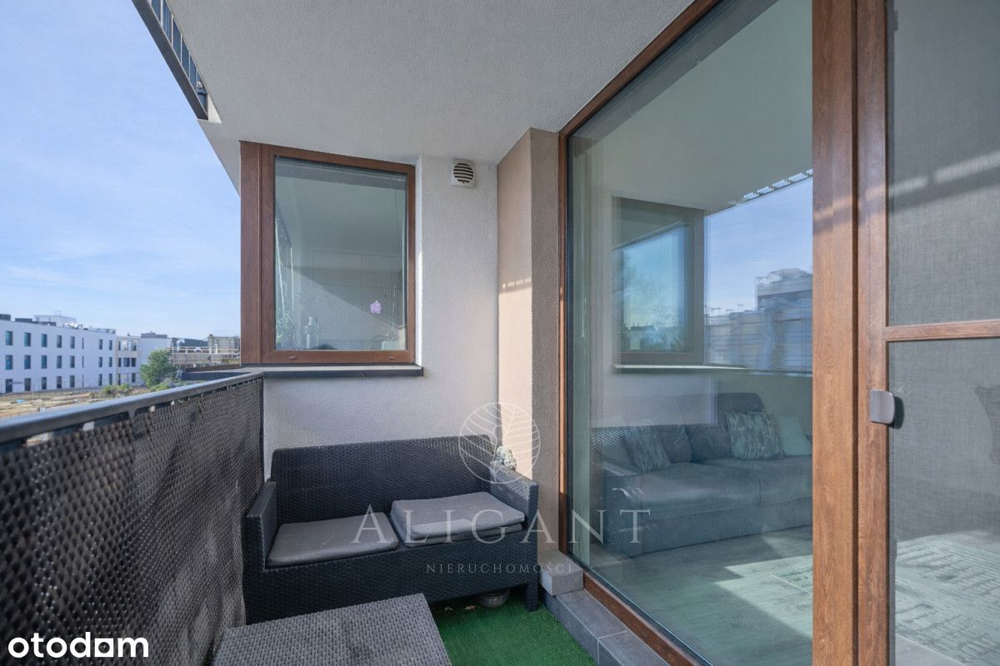
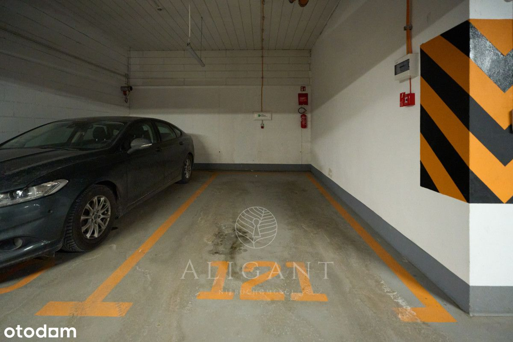
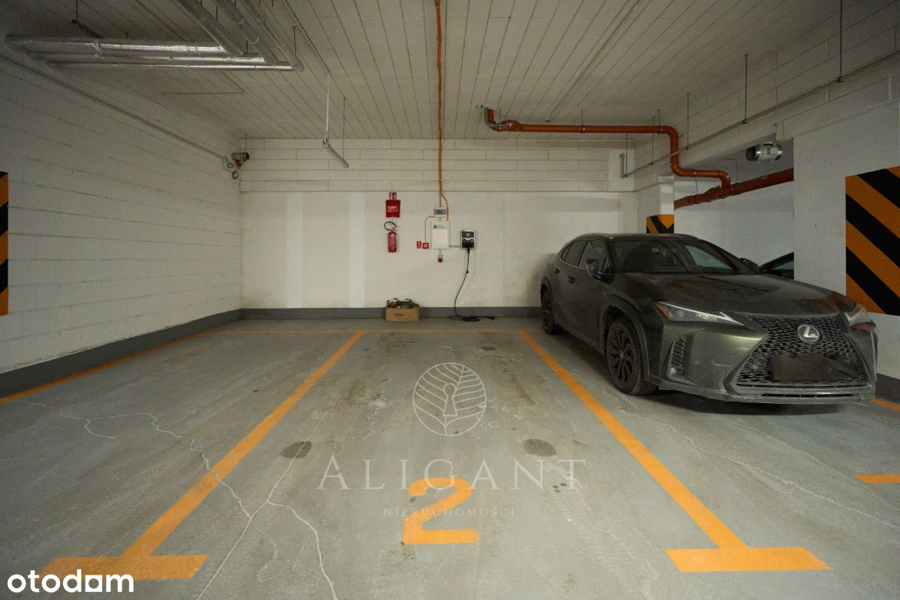
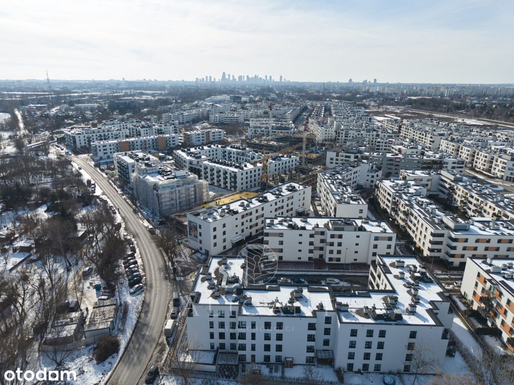
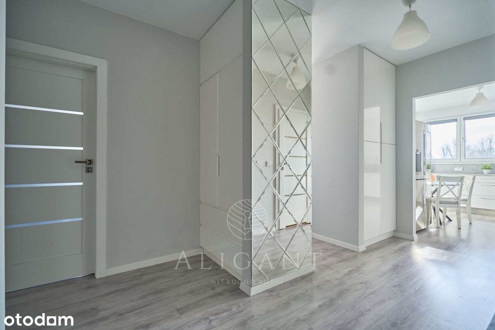
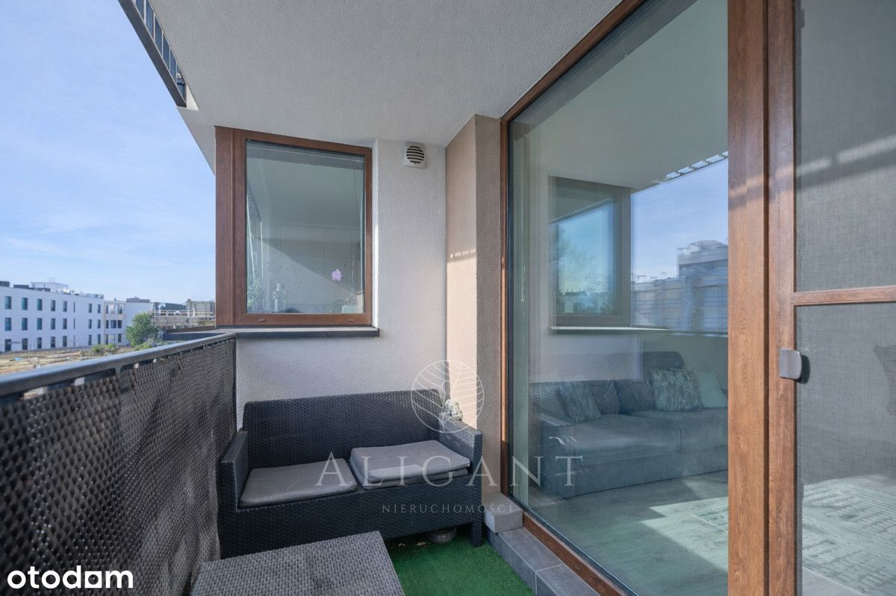
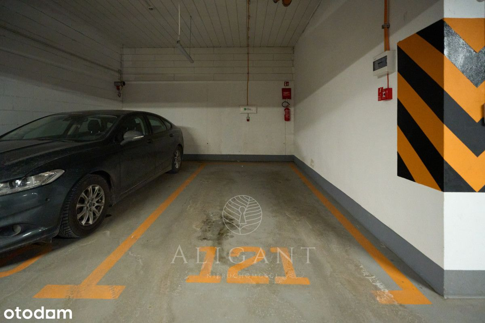
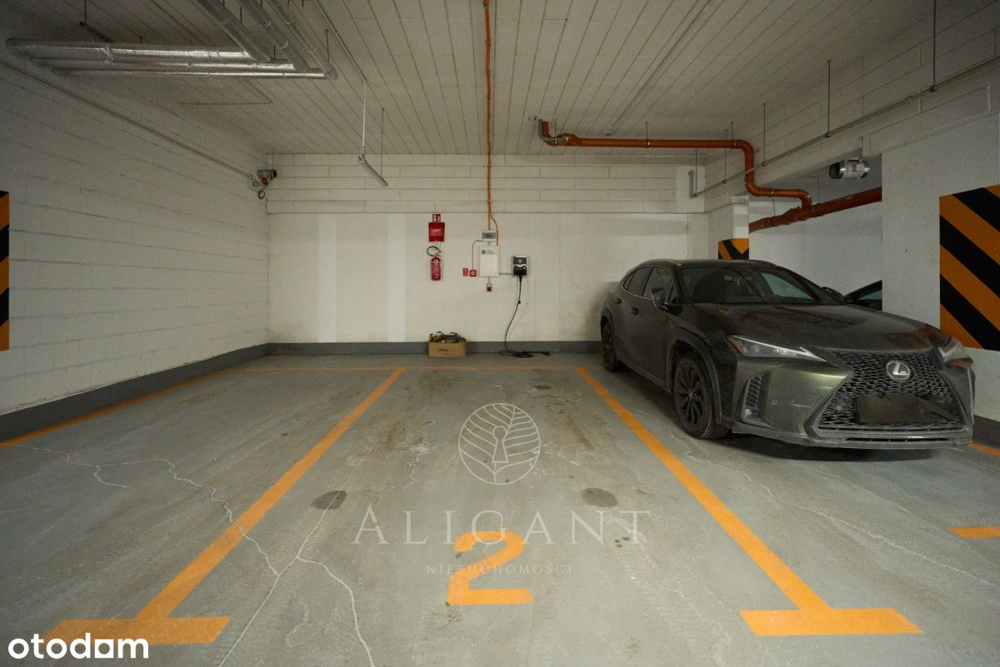
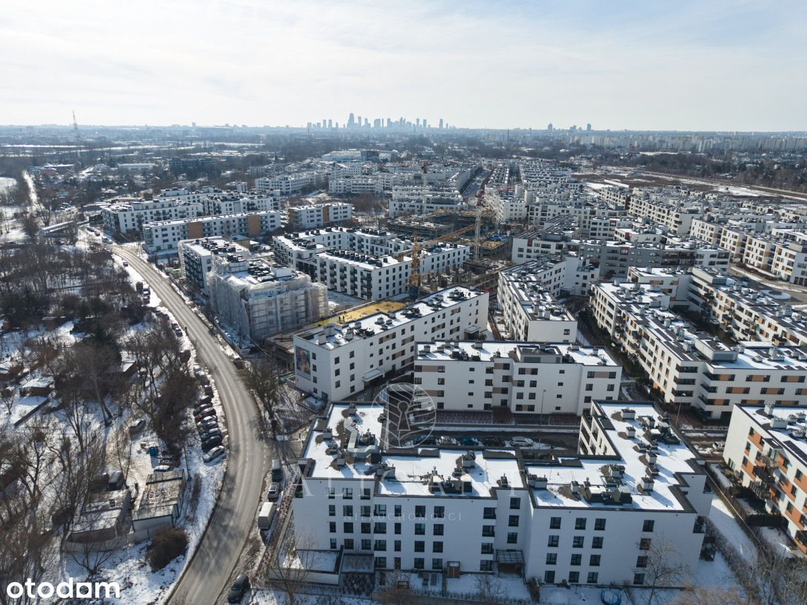

Szukasz dużego, przestronnego mieszkania, które znajduje się w cichej i jednocześnie dobrze skomunikowanej okolicy? Ta oferta jest właśnie dla Ciebie!
W SKRÓCIE
★ ul. Janowiecka, Targówek, Warszawa
★ Rok budynku: 2020
★ Powierzchnia: 95,7 m²
★ 4 pokoje, oddzielna kuchnia, garderoba, 2 łazienki, przedpokój, loggia
★ 2 miejsca postojowe w garażu podziemnym z zamontowanymi ładowarkami do samochodów elektrycznych (płatne dodatkowo 2 x 50 tys. zł)
NIERUCHOMOŚĆ
Mieszkanie znajduje się na drugim z trzech pięter, nowoczesnej inwestycji na warszawskim Targówku. Blok został wybudowany w 2020 roku przez renomowanego dewelopera Dom Development, którego realizacje charakteryzują się wysokim standardem wykonania i pięknie zagospodarowanymi przestrzeniami wspólnymi - place zabaw, tereny zielone - służące jako miejsca spotkań i wypoczynku. Budynek wyposażony został w windę, którą zjedziemy do hali garażowej. Osiedle jest zamknięte, monitorowane z całodobową ochroną.
UKŁAD POMIESZCZEŃ
Mieszkanie o powierzchni 95,7 m², składa się z 4 pokoi (w tym sypialni z prywatną garderobą), oddzielnej kuchni, 2 łazienek, przedpokoju i loggii. Wnętrze zostało urządzone w spójnym, ponadczasowym stylu z wykorzystaniem jasnej i eleganckiej kolorystyki. Niekwestionowanym atutem nieruchomości jest zamontowana klimatyzacja, która sprawdzi się szczególnie w upalne dni. Dodatkowo w przedpokoju został zamontowany inteligentny system wideodomofonu, który pozwala na odbieranie połączeń i otwieranie drzwi za pośrednictwem telefonu komórkowego.
Salon
Przestronny salon zachwyca harmonijnym połączeniem bieli, szarości i czerni.
*przestrzeń wypoczynkowa z wygodną kanapą i telewizorem
*duże przeszklenia z wyjściem do loggii
*wydzielona strefa jadalniana
*zamontowana klimatyzacja
Kuchnia
Jasna i w pełni niezależna kuchnia z zabudową w klasycznym, białym kolorze w połączeniu z szarymi blatami tworzy ponadczasową kompozycję. Przestrzeń została zaprojektowana z myślą o wygodzie codziennego użytkowania.
*meble wykonane na wymiar
*sprzęty AGD w zabudowie, w tym dwudrzwiowa lodówka z ekranem
*funkcjonalny układ w kształcie litery „L”
*narożne okno zapewniające naturalne światło
Sypialnia
Przytulna sypialnia urządzona w jasnych, spokojnych barwach z subtelnym drewnianym akcentem.
* strefa sypialniana z dużym łóżkiem i telewizorem
* prywatna garderoba z dużą ilością miejsca do przechowywania
Pokój nr 1
Funkcjonalne ustawne pomieszczenie urządzone jako pokój dziecięcy.
*szafy z lustrem - nadają eleganckiego charakteru całej przestrzeni
*dużo miejsca do przechowywania, dzięki czemu łatwo zachować porządek i organizację
Pokój nr 2
Idealnie sprawdzi się jako dodatkowy pokój dziecięcy, gościnny czy też przestrzeń biurowa do pracy.
Dodatkowe pomieszczenia:
- łazienka z wanną i dużym lustrem urządzona w jasnej kolorystyce z akcentami marmuru
- łazienka z prysznicem - nowocześnie urządzona przestrzeń z drewnianymi dodatkami
- przestronny hall z szafą w zabudowie
- duża loggia - doskonała na poranną kawę i wieczorny relaks
- dwa miejsca parkingowe w garażu podziemnym - umiejscowione bezpośrednio przy windzie i wyposażone w gniazda do ładowania samochodów elektrycznych
LOKALIZACJA
Na osiedlu znajdują się liczne punkty handlowo-usługowe, w tym sklepy, żłobki, przedszkola, restauracje i inne punkty ułatwiające codzienne funkcjonowanie. Położony w promieniu 1 kilometra Zalew Bardowskiego i las na Utracie tworzą malownicze miejsca idealne do spacerowania.
KOMUNIKACJA
Inwestycja zlokalizowana jest w świetnie skomunikowanym punkcie. Na terenie osiedla znajduje się stacja kolejowa Warszawa Zacisze Wilno (4 minuty do metra Dworzec Wileński), przystanki autobusowe (linii 156,170, 356, N16 - zapewniające komunikację przez całą dobę).
Zapraszamy do kontaktu z naszym biurem w celu umówienia spotkania i osobistego
zapoznania się z tą wyjątkową ofertą.
_
Jeśli przy zakupie nieruchomości planujesz posiłkować się kredytem odezwij się do nas. Nasz zaufany doradca kredytowy bezpłatnie zweryfikuje Twoją zdolność i przeprowadzi przez cały proces kredytowy od początku do końca.
Pośrednik odpowiedzialny zawodowo za wykonanie umowy pośrednictwa:
Daniel Krych
Doradca ds. Nieruchomości
tel. +48 788 136 227
mail:
 
